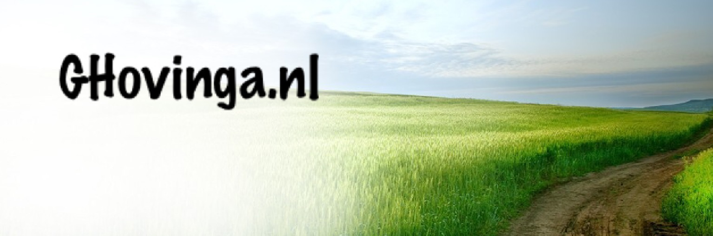

<!DOCTYPE html PUBLIC "-//W3C//DTD XHTML 1.0 Transitional//EN" "http://www.w3.org/TR/xhtml1/DTD/xhtml1-transitional.dtd">
<html>
<head>
<meta http-equiv="Content-Language" content="nl"/>
<title>Waddensound Verzoekjes/title>
 
<meta http-equiv=	"Content-Type" 		content=	"text/html; charset=utf-8"/>
<meta name=		"keywords" 		content=	"" />
<meta name=		"description" 		content=	"" />
<meta name=		"robots" 		content=	"index, follow" />
<meta name=		"author" 		content=	"Waddensound" />

<link href="images/favicon.ico"	rel="shortcut icon" type="image/x-icon"/>
<link href="style/sheet_1.css" 	rel="stylesheet"    type="text/css" />  
<style type="text/css">
body {background-image: url(images/bodybg.png);}
a:link {text-decoration: none;}
a:visited {text-decoration: none;}
a:hover {text-decoration: none;}
a:active {text-decoration: none;}
.style1 {color: #000000;font-weight: bold;}
.style4 {color: #000000}
</style>
</head>
<body>
<div id="toptabs"></div>
<div id="container">
<div id="logo">
<h1></h1></div>
<div id="navitabs"><h2 class="hide">Sample navigation menu:</h2>
<a href="index.html" target="_self" class="activenavitab">Home</a><span class="hide"> | </span> </div>
<div id=""></div>
<div id="main">
<h2 align="center"><strong>Welkom op Waddensound.nl</strong></h2>
<p>Wij mogen uw begroeten op de vernieuwde website, Waddensound.</p>
<table width="50" border="0"><tbody><tr>
<td><h2><strong> <audio controls autoplay><source src="http://listen.waddensound.nl:8000/listen.pls?sid=1"></audio></strong><br /></td>
<td><h2>
  <br /></td>
<td>&nbsp;</td><br /></tr></tbody></table>
<table width="704" border="0"><tr>
<th width="117" scope="col"><div align="left">Server Status :.</div></th></tr></table>
<table width="704" border="0"><tr>
<th scope="col"><div align="left"></div></th><th scope="col"><div align="left"></div></th></tr></table>
<p align="center" class="block">Email:radiowaddensound@hotmail.com
<h3>&nbsp;</h3></p>
<p class="block">Note: Hoewel wij natuurlijk ten alle tijden proberen om een zo goed mogelijke live stream van Waddensound te verzorgen, is dit niet te garanderen. Het hangt namelijk af van verschillende factoren. Wij vragen uw begrip hier voor. Wij wensen u veel luisterplezier ! </p></div>
<div id="sidebar">
  <h4><em>Linken</em></h4>
. <a href="http://cdhal.nl" title="CDHal" target="_blank">CD hal Ruinen</a><br />
. <a href="http://www.jbswart.nl" title="Platenkoning" target="_blank">Platenkoning</a>
<div style="background-color:#fffff0;color:#303030;font-family:Verdana,Arial,Tahoma,Times New Roman;font-weight:bold;font-size:10px;;width:120px;text-align:center"></a></div>
<ul class="sidelink">
  . <a href="http://www.hollandsehits.nl" title="Hollandsehits" target="_blank">Hollandsehits</a><br />
</ul>
<br />
<h4><em>Internet Stations</em></h4>
<div style="background-color:#fffff0;color:#303030;font-family:Verdana,Arial,Tahoma,Times New Roman;font-weight:bold;font-size:10px;;width:120px;text-align:center"> </a></div>
<ul class="sidelink">
<a href="#" title="Double Z" target="_blank">. Double Z</a><br /><br />
  <p><br />
    <br /><br /><br />
  </p>
  <h4><a href="http://www.etherpiraten.com" title="Etherpiraten.com" target="_blank">Etherpiraten.com</a></h4>
<h4>&nbsp;</h4>
<br /> 
<h4>&nbsp;</h4>
</ul>
</div>
    
<div id="footer">2015-2016 <strong>:Disign gemaakt door Waddensound.nl</strong></div>
</div>
</body>
</html>
